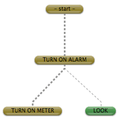
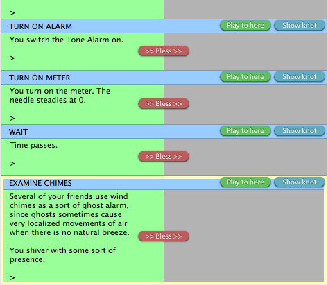
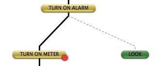
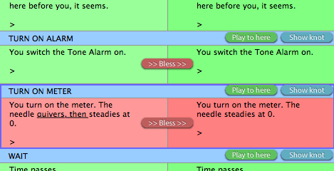

Writing in Inform
1. Welcome to Inform
WI §1.1. Preface
Welcome to Inform, a design system for interactive fiction based on natural language.
Interactive fiction is a literary form which involves programming a computer so that it presents a reader with a text which can be explored. Inform aims to make the burden of learning to program such texts as light as possible. It is a tool for writers intrigued by computing, and computer programmers intrigued by writing. Perhaps these are not so very different pursuits, in their rewards and pleasures.
The sheer joy of making things... the fascination of fashioning complex puzzle-like objects of interlocking moving parts and watching them work in subtle cycles... the delight of working in such a tractable medium. The programmer, like the poet, works only slightly removed from pure thought-stuff. He builds his castles in the air, from air, creating by exertion of the imagination. (Frederick P. Brooks, "The Mythical Man-Month", 1972)
Writing with Inform is one of two interlinked books included with Inform: a concise but complete guide to the system. The other book is The Inform Recipe Book, a comprehensive collection of examples, showing its practical use. If you are reading this within the Inform application, you will see that the Writing with Inform pages are on "white paper", while the Recipe Book is on "yellow paper".
These notes are arranged so that the reader can, in principle, write whole works of fiction as early as the end of Chapter 3. Each subsequent chapter then extends the range of techniques available to make livelier and more intriguing situations.
This new release of Inform ("Inform 7", the seventh major version since 1993) is a radical departure from most previous approaches to interactive fiction. In particular, it is very different from Inform 6, which newcomers will not need to know anything about. Inform 6 sits inside Inform 7, and is part of the inner workings, but is not visible from the outside. For information about Inform 6, see www.inform-fiction.org.
Programming is best regarded as the process of creating works of literature, which are meant to be read... so we ought to address them to people, not to machines. (Donald Knuth, "Literate Programming", 1981)
See also
Examples
1. About the examples ★ An explanation of the examples in this documentation, and the asterisks attached to them. Click the heading of the example, or the example number, to reveal the text. (c.f. RB §1.1. Preface)
WI §1.2. Acknowledgements
Inform 7 is dedicated to Emily Short and Andrew Plotkin, whose shrewd and sceptical suggestions made a contribution which can hardly be overstated. A long email correspondence with Andrew entirely subverted my original thoughts about natural-language IF, as he convinced me that the "new model" of rule-based IF was a truer foundation; while Emily's wry, witty analysis and how-about-this? cheered me at low moments, besides providing the impetus and often the specifics for a lot of the best ideas.
From the outset, I have thought of Inform 7 as no longer being a command-line compiler, but a compiler in combination with a humanising user interface. All credit for the reference implementation under Mac OS X belongs to Andrew Hunter. How simple the metaphor of an interactive book with facing pages may seem, but the coding was an enormous challenge. In 2014 Toby Nelson, the author's brother, put months of time into the project by rewriting and modernising the Mac OS X application: sandboxing it for the Mac App Store, giving it a more contemporary design, and much more.
Though David Kinder's Windows application does indeed visually follow the OS X original, the two programs were coded independently, and the programming task taken up by David was formidable indeed. Philip Chimento's Gnome-based user interface for Linux became officially part of the project in November 2007, when the first easy-to-install packages for Ubuntu and Fedora were offered. Philip's efforts were particularly generous since the early stages of Inform-for-Linux were so tentative: for many months, we weren't sure how to go about the project, and during that time Philip quietly wrote us a solution. Adam Thornton continues to support Inform at the command line on Unix-like systems.
Inform in its widest sense incorporates work by so many people that it's simply impossible to thank all of them, but Erik Temple, Dannii Willis, Ron Newcomb, Eric Eve and Juhana Leinonen all deserve special mention. More than 250 users have filed patient and careful bug reports, keeping us on the straight and narrow. They're contributors, too.
It's perhaps surprising that the Inform application gained its first online component only in 2014, but the Public Library of Extensions, and its discussion forum, make a brave step into the modern age. Mark Musante, our Extensions librarian, Dannii Willis and Justin de Vesine have been a great help in setting this up.
The original development of Inform 7 was a long haul, and I would particularly like to thank Sonja Kesserich, David Cornelson and other volunteers for their early testing of a then-fragile system. The final months before the Public Beta release of Inform 7 were made more enjoyable, as well as more productive, by fruitful discussions leading to a cross-platform standard for bibliographic data and cover art. L. Ross Raszewski, who wrote frighteningly efficient reference software in frighteningly little time; the librarians of the IF-Archive, Andrew Plotkin, David Kinder and Paul Mazaitis; and my fellow authors of IF design systems - Mike Roberts (of the Text Adventure Development System); Kent Tessman (of Hugo); and Campbell Wild (of ADRIFT).
WI §1.3. The facing pages
This Public Beta of Inform 7 runs on Linux through the graphical user interface created by Philip Chimento.
The main window is an opened book showing two facing pages, and as we shall see it behaves as if these pages are in dialogue with each other: for the most part we write on the left hand page and see responses appear on the right. But all is controllable. The margin between the two pages can be dragged back and forth like the slide on a trombone: each page can be made smaller that the other may grow larger. Moreover, each page can display one of a number of displays relevant to the current project, called "panels", one of them being the Documentation panel which displays this manual. The vertical strip of choices at the right hand margin of each page allows you to choose between panels. (The same panel can be showing on both pages at the same time, if that's useful.)
At the start the only panels available are a blank space in which to write the first lines of a new interactive fiction - the Source panel - and this one, the Documentation. Clicking on the other choices will do nothing.
The exception is the Settings panel, which contains some preference settings for the individual project - not the whole application. This is always available, but it controls settings which can be left alone almost all of the time.
WI §1.4. The Go! button
Clicking the Go button translates the text in the Source panel into a computer program which enacts the interactive fiction, and automatically sets it going (in the Story panel, which opens as needed).
If the Source is empty of text, Inform will be unable to create anything: it needs at least one name of a location where the drama can unfold. For reasons of tradition, such locations are normally called "rooms", though people have used them to represent anything from grassy fields to states of mind and other metaphorical places.
"Midsummer Day"
The Gazebo is a room.
Clicking Go with this text in the Source panel will result in a short delay, after which the Story panel will appear, from which we can explore this newly created world: an interactive fiction called "Midsummer Day". It will not be very exciting, since Inform has only five words to go on, but we can add more detail to the source at any point and then click Go again to try out the changes. (Note that there is no need to "quit" these explorations in the Story panel. When Go is clicked, any story already in progress is discarded in favour of the new version.)
Typing Ctrl-R has the same effect as clicking Go. Clicking on a "text" icon  in this documentation copies the example text which follows it into the Source as if you had faithfully typed it out. (This icon is usually provided only for fairly long examples, but note that you can in fact copy and paste any text from this documentation into the source by selecting it with the mouse, typing Ctrl-C, then clicking to a position in the source and typing Ctrl-V.)
in this documentation copies the example text which follows it into the Source as if you had faithfully typed it out. (This icon is usually provided only for fairly long examples, but note that you can in fact copy and paste any text from this documentation into the source by selecting it with the mouse, typing Ctrl-C, then clicking to a position in the source and typing Ctrl-V.)
WI §1.5. The Replay button
Replay works identically to Go, except that it does something further: once the story is created, it automatically plays through the same commands as were typed into the previous version. For instance: suppose we click Go to bring Midsummer Day into being, and find ourselves playing the story. We type "look" and find that there is not much to see. Going back to the source, we add
"A white canvas parasol raised up on stakes driven into the grass."
so that the source now reads
"Midsummer Day"
The Gazebo is a room. "A white canvas parasol raised up on stakes driven into the grass."
Instead of clicking Go, we click Replay, and can sit back and watch what has changed. In this example, it only saves us the trouble of typing "look", but once stories become long and elaborate, Replay is invaluable: and especially when we notice in play that something very minor is wrong - a spelling error, say - and want to fix it immediately, without fuss.
WI §1.6. The Index and Results panels
If, when Go! is clicked, the text in the Source panel is not fully understood, then Inform will generate a report of the problems it found, which will open in the "Errors" panel. (Other information is also available in "Errors", but most of it is used for debugging Inform, and can be ignored.)
On the other hand, if the text was fully understood then another new panel will become available: the "Index". This is a cross-referenced index of the source, or rather, of the interactive fiction which has been generated. The Index is only an optional convenience, but becomes more and more helpful as the fiction grows larger. Its exact format does not matter for now.
The icon  always denotes a reference to a particular line in the Source text, that is, to something written in the source: clicking it opens the Source panel and jumps to that position.
always denotes a reference to a particular line in the Source text, that is, to something written in the source: clicking it opens the Source panel and jumps to that position.
The icon  indicates that more detailed information can be read further down the text in the same panel: clicking it jumps down to this more detailed report.
indicates that more detailed information can be read further down the text in the same panel: clicking it jumps down to this more detailed report.
Lastly, the icon  hints that there is a relevant page of this manual: clicking this opens the Documentation panel and switches to it.
hints that there is a relevant page of this manual: clicking this opens the Documentation panel and switches to it.
WI §1.7. The Skein
The Replay button demonstrates that Inform must be quietly remembering the commands typed into the last run through the story. In fact it remembers, and automatically organises, every previous run.
Inform's approach to testing interactive fiction is to treat it as being like the analysis of other turn-based games, such as chess. It would be prohibitively difficult to work out every possible combination of moves: instead, we analyse those which go somewhere, and look for significant choices. Every Queen's Gambit begins with the same first three moves (1. d4, d5; 2. c4), but then there is a choice, as the next move decides whether we have a Queen's Gambit Accepted (dxc4) or Declined (e6). Books about chess often contain great tables of such openings, which run together for a while but eventually diverge. To learn chess, one must explore all of these variations.
Inform's Skein panel is just such a table, built automatically. If we think of the list of typed commands as a thread, then the skein is (as the name suggests) braided together from all these threads. In the display, time begins at the top, with the start knot, and the threads of different play-throughs hang downwards from it.
Double-clicking on a command translates the source afresh and replays the story from start down to that command, and then stops. We are then free to continue play by typing commands into the Story panel, of course, and these commands will automatically be recorded in the Skein as a new variation of play, diverging from the previous threads.
WI §1.8. A short Skein tutorial
In the following example, we will see how the Skein is woven as different commands are tried. As it happens, the story being played is the example "Witnessed", from Chapter 11, but the details do not matter. When the project has never been played at all, if we switch to the Skein panel (or open it opposite the Story panel) we will only find this:
Suppose we click Go for the first time and type two commands in: TURN ON ALARM and then LOOK. Now the Skein shows:
Only one line of play is known to Inform, and it runs downwards in a thread from the special "- start -" knot, which represents the situation before any command has been tried. The useful thing about having past histories recorded like this is that we can revisit them. Suppose we want to go back to the situation after typing only TURN ON ALARM. We could click Go again and type that first command in once more, but now we have an easier method: we simply double-click on the TURN ON ALARM knot. The story restarts by itself, and commands are automatically keyed in to regain the position of play represented by the knot we clicked on - in this example that only keys a single command in, but it might have been hundreds. The Skein now looks like this:
All knots are displayed either as yellow or green. Yellow knot are the ones in the history of the story currently playing. The LOOK knot is green because it hasn't happened in the current story yet - and in fact, it won't happen in the current story, because instead we play TURN ON METER. Now the Skein changes again:

Inform now knows about two ways to play the current project: one consisting of TURN ON ALARM and then TURN ON METER, the other of TURN ON ALARM and then LOOK. Since these only differ after the first turn, Inform displays them as a thread which divides into two after the first turn. Again, LOOK remains green because it hasn't been played in the current story.
Note also that one of the two possible threads here is drawn more thickly (here it is shown with thick dashes rather than thin). Only one thread is ever drawn thickly -- the one currently being shown in the Transcript panel, which we will come to later on. (That often corresponds to the current line of play, as now, because the Transcript follows what we do unless we choose otherwise.)
After a little more exploration, we reach the following:
At this point we decide that we want to preserve the thread leading to EXAMINE CHIMES - perhaps it's a sequence we are going to want to test often. The Skein can be edited very easily: right-clicking on a knot brings up a contextual menu.
We choose Lock This Thread from the contextual menu, and this makes the thread through to here "locked". That means the knots can't be deleted (unless we unlock them again) - either by our own mistake, or by Inform trimming back no-longer-needed threads of the Skein to keep it manageable in size.
Note that this locked history is now drawn as a solid thread, whereas all the others are unlocked and drawn as dashes.
Now we have a securely remembered piece of standard play: it means we can try out the sequence TURN ON ALARM / TURN ON METER / WAIT / EXAMINE CHIMES any time we want to with a double-click on the final knot. This is convenient for testing - but so far it only runs the test: to see whether the test came out well or badly, we have to look through what happened, perhaps by scrolling back in the Story panel to look at the text. And that means that we need to remember what the text should have been like.
In fact, though, Inform can remember for us, using the Transcript panel. This is closely joined to the Skein panel, and it's often convenient to flip between the two. Turning to the Transcript now, we find a two-column view of the story currently being played. The left-hand column shows the text which has been displayed on each turn so far; the right-hand column is empty. The bottom of the Transcript looks like so:

The empty right-hand column displays the "blessed" transcript - one which the author has approved as being correct. This can be done for each individual knot, using the Bless button joining the columns, but in this case we will bless the whole transcript of this story, using the Bless All button. Now there's text in both columns, and of course the two columns match. (Note that the blessed transcript is in a brighter colour.)
Back in the Skein, we find that the knots which have transcripts have lit up, and are brighter than the others. If we Go, to start a new story, and then look at the Skein:
we see that the knots for which we have blessed a transcript are in a brighter green (or a brighter yellow, if they're in the current story being played).
Now suppose we change the source text for the project, so that we make it behave differently. The details don't matter, but suppose we do something which changes the result of the TURN ON METER command, and then run the test again. Now we find:

The red warning badge on the TURN ON METER knot alerts us that the last time this knot was tried (just now, as it happens), the resulting text didn't agree with its blessed transcript. (Red badges can only be seen on bright-coloured knots which have transcripts - for other knots, there's nothing to compare with.) On the other hand, the rest of the yellow current line of play worked out exactly the same as we expected - so no badges. Clicking on the red badge takes us into the Transcript panel at the right place, where the corresponding turn's transcript has also turned red:

Again, what actually happened is on the left; what should have happened is on the right. The change is shown with underlining - we added the text "quivers, then". If we approve this change, by clicking on the Bless button for the red turn, the amended text will become the correct text to compare against in future runs, and the turn will become green to show that once again all is well. (We can also edit the blessed transcript directly, by double-clicking in the text and typing.) Clicking on the Show knot button takes us back in the skein, at the right place: where we will see that the red warning badge has disappeared.
Some writers of IF like to work backwards from a transcript of the story they want to produce, and for them, the Skein and Transcript combination will be helpful as a running picture of what works so far. Other authors may not use the Skein/Transcript feature at all until right at the end of a project, in testing before publication, when it becomes very important to be able to make small changes in one area without upsetting everything else. Either way, the Skein and Transcript together make a very powerful testing aid.
This tutorial has shown only a short line of play, to keep the pictures small, but for a large project the Skein might run to thousands of knots. It then becomes important to be able quickly to find key knots corresponding to plot developments. To help with that, we can annotate certain knots with any label we choose (by selecting Add Label from the contextual menu):

And this is where the "Labels" gadget at the top of the Skein comes into its own:
since it offers a menu of all the labels in the Skein, and if selected will jump to the one chosen.
The Skein has other abilities too, best explored by experimenting. For instance, we can edit the commands by selecting Edit Knot from the contextual menu, and we can add new knots in the middle of existing lines using the Insert Knot item on that menu. The Play All Blessed option (on the Game menu) is especially powerful: it tests each possible blessed history in turn, trying all of them, and can therefore test very complicated multiple endings and the like in a single click.
WI §1.9. Summary of the Skein and Transcript
The Skein records the history of different plays through the current project, and the Transcript records the text of each response, comparing it with a "blessed" or correct version if one is available.
In the Skein each typed command is a "knot". The threads hanging down from the top "- start -" knot are possible histories. Double-click on a knot to play through to there.
Yellow knots are commands played so far in the current story: green knots are possible lines not taken, or not taken yet.
A solid thread is "locked" and protected from deletion (by accident or when Inform trims away loose ends): a dashed thread has no such protection.
A bright knot has a blessed transcript: a darker knot is one which has no blessed transcript. When a bright knot shows a red badge, this means that when last tested its command produced a textual reply which wasn't the same as the blessed transcript. Clicking on the badge shows exactly how.
The thicker thread in the Skein shows the history currently being displayed in the Transcript panel.